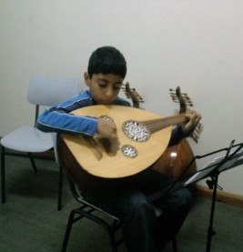
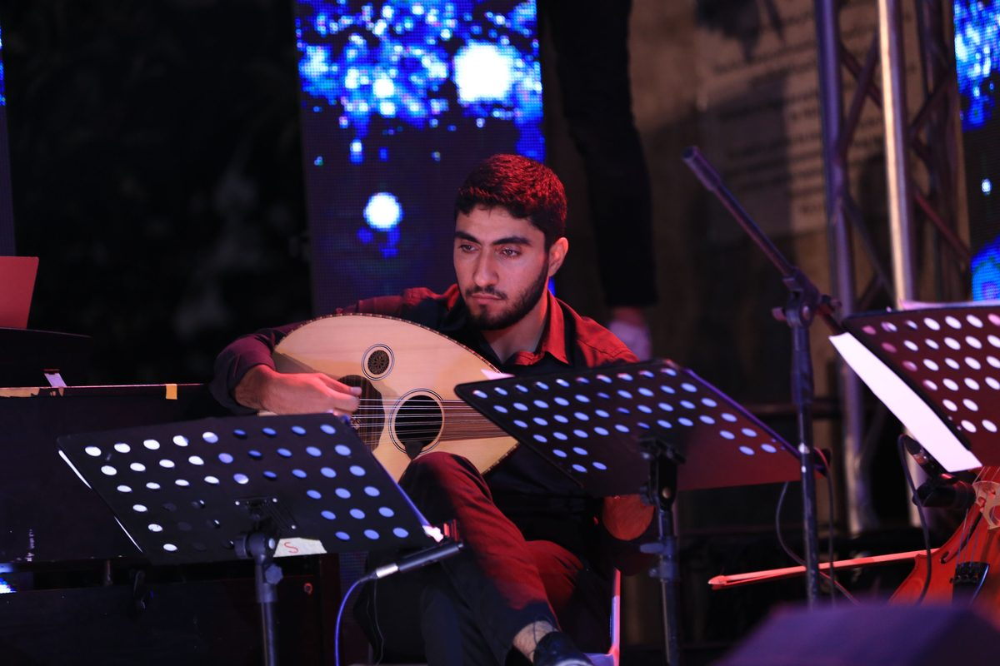

Early years
Sarraj Alsersawi was born in Gaza City, Palestine, in 1998, into a small family of four. His father, Fayez Alsersawi, is a renowned artist. His mother, Nehaya Alsersawi, has managed several cultural and humanitarian organisations. His brother, Diaa Alsersawi, is a literature researcher and guitarist.
Training
Sarraj began learning music at the Gaza Music School, launched in 2008 by the A.M. Qattan Foundation as the first long-term music education programme in the Gaza Strip.

It was Ibrahim Alnajjar, then head of the Gaza Music School, who first handed Sarraj the oud.
It was a turbulent start. Only months after the school opened, Israeli bombing on 14 January 2009 destroyed its premises. The building happened to be empty at the time, and the school reopened that April.
Shortly after, as the school expanded, Ayman Abu Abdo became Sarraj's oud teacher.
In 2012, qanun teacher Anas Alnajjar became Sarraj's main teacher, in joint classes that brought oud and qanun students together. Those lessons shaped his musical phrasing and his early identity as a musician.
Under his supervision, the Gaza Music School's small ensemble, with Sarraj on oud, won second place for group playing at the Palestine National Music Competition in 2012. Watch the performance →
Shortly afterwards, the school became the fifth branch of the Edward Said National Conservatory of Music.
Later, in the years before he graduated from the conservatory, Sarraj studied oud with Ismail Daoud, who sharpened his virtuosity on the instrument.
Sarraj completed his intermediate oud studies at the conservatory in 2017.
Teaching and performing
After completing his studies, Sarraj went on to teach at the conservatory. He became a key oud player in the Gaza Orchestra and performed with several other ensembles.
Sarraj also ran outreach music programmes for children in less privileged areas of Gaza, in cooperation with the Nawa for Culture and Arts Association and the conservatory. From 2018 he led oud courses for children aged 10 to 14, teaching them the parts of the instrument, plectrum technique, the Arabic maqams and their first pieces.


In 2019 Sarraj led the musicians in the live performance of the Young Composer (المؤلف الشاب) album, as part of the Sea and Freedom Festival in Gaza.

Read about the album (Arabic) →
In 2022 Sarraj and his friends and colleagues from the conservatory founded Maqam (فرقة مقام), a band from Gaza devoted to classical Arabic music. Maqam performed instrumental and vocal pieces in a fresh, contemporary style, building its own musical identity through its arrangements.
Like many of Sarraj's plans, the band did not survive the atrocities that befell Gaza in 2023.
Awards & grants
-
2025
Music Capital Scheme
Awarded funding by Music Network's Music Capital Scheme, in the strand for emerging professional musicians, to buy a new oud and case.
About the scheme → -
2023
Ireland Fellows Programme scholarship
To study for an MSc in Electronic and Computer Technology (Internet of Things) at Dublin City University, through the Ireland–Palestine Scholarship Programme. Graduated first in his class.
-
2021
Palestine National Music Competition
First place in the Arabic music section.
-
2012
Palestine National Music Competition
Second place for group playing, with the Gaza Music School's small ensemble under Anas Alnajjar.
Watch the performance →
Engineering
Alongside music, Sarraj studied mechatronics engineering at Al-Azhar University – Gaza from 2016, graduating in 2021, and then worked there as a teaching assistant.
In 2023 he was awarded an Ireland Fellows Programme scholarship, through the Ireland–Palestine Scholarship Programme, to study for an MSc in Electronic and Computer Technology (Internet of Things) at Dublin City University. He graduated with first-class honours, top of his class.
“I kept going for my family”, Irish Independent → Read his DCU profile →
Ireland
In 2023 Sarraj moved to Ireland, where he lives today and continues his work as a musician and engineer.
What's next
In winter 2027 he will tour central Sweden on oud with Ethno on the Road, the touring group of the international Ethno folk music gathering.